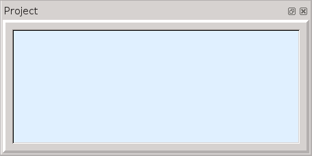

ebe Tutorial Quick Introduction
Starting and Finishing
It is generally best to start at the start. I also think it is important to be also finish whatever you start. Both these are generally easy but there are a few programs (notably vi) which can be difficult to finish.
Start ebe by typing in "ebe" in a terminal window. Ebe will start and will display a collection of sub-windows and toolbars in the ebe window. The main sub-window is the source window which can hold several tabs with separate source files. There are also a collection of sub-windows which are "dock" widgets. Initially the dock widgets are shown to the left. The dock widgets can be moved around, stacked to make tabbed dock widgets and even moved to be independent windows. Likewise the toolbars can be dragged around.
There is a View menu option is ebe which can be used to select/deselect dock widgets to customize ebe's appearance. Ebe saves its configuration is the file ".ebe.ini" in the current directory which allows you to keep your custom settings for a project just like you want it.
When you first start ebe it should look like the picture below.
This layout is not ideal and is intentionally cramped to fit smaller screens. Most likely you will want to make the ebe window larger and drag the "channel" between the dock widgets and the source window to make the dock widgets wider. There are also about 6 dock widgets which are not shown initially which could be valuable.
Exiting ebe
You can exit ebe from the File menu exit option which also shows a shortcut
using the keyboard (Ctrl-Q or Apple-Q). You can also use the door icon,  from the left-most toolbar to exit using the mouse. Equally you can use the
"X" or whatever your system has in the title bar for killing a program.
from the left-most toolbar to exit using the mouse. Equally you can use the
"X" or whatever your system has in the title bar for killing a program.
Ebe Subwindows
Source Window
Here we have shown the ebe main window without the dock widgets. This shows the source window and the toolbars. The code template toolbar (on the right) is too big to see entirely in this picture.
The source window is where you will enter your code. It along with the main window is also the hub of the application. It has the menu system where you can open files and perform a range of editing operations. There are several toolbars including the debug toolbar which has 5 buttons used in debugging:
The run button (green alien) builds your program and starts it in the debugger. It continues to run until it hits a breakpoint. The next line to be executed will be displayed with a light blue-green background.
The next button is used to execute one line of source code in the debugger. It shows an arrow going over some code which means that it does not step into called functions. The highlighting will switch to the new line. Next will stay in the same function (or subroutine for Fortran).
The step button executes one line of source code, but it will step into a function if the line contains a function call. Here the arrow shows going into some code. You probably don't want to step into system library functions.
Continue will execute code until it reaches another breakpoint. This time the arrow indicates starting from here and keeping on going. This can be useful to rapidly execute a section of code which works properly.
This button ends the debugging session and removes the highlight from the last highlighted line.
Data Window
The data window is pretty boring at the start. In general it will display program variables in 3 categories: globals, locals and parameters. It displays parameters and local variables for functions when it enters them, so initially it has none to display.
The globals, locals and parameters will be displayed for languages which have provided adequate debug data. Assembly functions will show no local variables, while C/C++ and Fortran will. There is an assembly data window which will show globals for assembly language and allow you to define data based on addresses displayed in the various windows. There is also a stack frame window which can be used to monitor assembly parameters and local variables.
The red triangle is a collapse/expand button. If it points up, it is a collapse button which would hide all the variables under the category. Likewise a downward pointing triangle would expand a category or variable.
Register Window
The register window displays the current state of the general purpose registers at each point where control has returned to ebe from the debugger. Thus when you single-step through your code with with Next or Step the current values will be fetched from the debugger and displayed.
This window is probably useful only for assembly language. For higher level languages the data window should suffice. Many assembly instructions change the values of registers so seeing these registers live during a debug session is critical.
There are 2 format choices available for the general purpose registers: decimal and hexadecimal. You can select a format by right clicking on a register name and selecting a format from the popup list.
Floating Point Register Window
The floating point register window displays the current state of the floating point registers at each point where control has returned to ebe from the debugger. Thus when you single-step through your code with with Next or Step the current values will be fetched from the debugger and displayed.
This window is probably useful only for assembly language. For higher level languages the data window should suffice. Many assembly instructions change the values of registers so seeing these registers live during a debug session is critical.
The common format choices for the floating point registers are float (32 bits) and double (64 bits). There are also formats matching the SSE and AVX instruction sets.
Terminal Window
The standard input and standard output streams for programs being debugged are piped to the terminal window. This means that printf and cout results will show up in the window and the user will need to type in the terminal window to satisfy scanf and cin statements. Ebe will force all output to be immediately displayed which is not the normal pattern for C/C++. In C if you don't end an output line with a new-line character the printing is delayed until you print the new-line. In ebe it is immediate. Also all inputs are handled using the "Input" text input box. You can use Control-D (or C or Z) in the input box to send an "end of file" into the program being debugged.
Project Window
It is possible to use ebe without a project as long as the program consists of one source file. If you need multiple source files you will need a project file. You can also include data files in a project if desired. A project file is a file with the extension "ebe" and consists of a series of file names - one per line. Any file with know extensions like ".c" or ".asm" are compiled when you click the run button. Files with unknown extensions are assumed to be data files and are ignored when rebuilding the program.
Console Window
The console window gives you direct access to the gdb debugger while you are running a program in ebe. You can observe the interaction between ebe and gdb while debugging. You can also type in gdb commands in the text box at the bottom of the console window.
Most people will have little need for the console window and it is not displayed until selected using the View menu.
Backtrace Window
The bactrace window shows the results of executing the gdb backtrace command after each step in execution of your program. This shows information from the runtime stack showing all function calls and parameters currently active in the program.
Most people will have little need for the backtrace window and it is not displayed until selected using the View menu.
Toybox Window
The toybox window allows you to quickly evaluate expressions in either C/C++ or Fortran. You can define some variables in the top table by entering names, types and values. Then you can define expressions in the bottom table and click the "do it" button to the right of an expression to evaluate the expression. Ebe will build a test program, compile and execute it, capturing its output in the result box. Then you can select appropriate formats for your data.
The toybox is great for experimenting in a language and is particularly useful in the beginning. It can be pretty slow writing programs and executing them to see what the compiler does with your code. The toybox is easy, flexible and quick. It is shown at the start to tempt you to try it out.
Bit Bucket Window

The bit bucket window allows you to experiment with a variety of low-level features. You can execute all the unary and binary operators available in C/C++. This means that you can select the binary bit operations and perform operations like left shift and exclusive or. There is even a rotate operator added for assembly programmers.
It does integer conversions and math step by step so that you can learn how to do these yourself. The float conversions include conversion from internal format into numeric form and also from numeric form into the internal representation of floats. This too is done step by step so that you can learn the steps.
Most people will have little need for the bit bucket and it is not displayed until selected using the View menu. It is directed more towards assembly programmers but it can also be useful for C/C++ and Fortran programmers.
Entering a program
You can simply type in the text for a new program in the editor of the source window. Using the arrow keys, return and backspace are almost sufficient for getting started. Ebe has a word completion facility which tries to help you type by offering possible completions for partial words. Above you can see the source window with ebe offering to complete the C++ keyword namespace after entering "n". Simply press the enter key to complete the word with the selected completion. The keyword using was completed after entering 2 letters, so it is quick to enter "using namespace std;" in ebe.
Saving the source file
It is necessary to have a name for your source file in order to run the program. Once ebe knows the name of your file it will automatically save the file each time your click on the Run button. To save your file file either click on the File menu option or press Alt-F (or Apple-F). This will bring up the File menu shown to the right.
You would then select "Save as" to save the file and give it a new name. The "Save" option will work just as well if the name is not already known.
To the right you can see the file save menu after typing in "sample.cpp". Pressing the Save button will then save the source code in "sample.cpp". Following this the Run button will automatically save the file and attempt to build a program named "sample" using the "g++" command.
Running your program
You can compile and run your program by clicking on the Run button, . However you will usually want to set one of more breakpoints in your code before running it.
A breakpoint is a point in your program where the debugger will pause the execution of your program. In the program above you can see that the line number for line 9 has a red background which indicates that a breakpoint has been set on line 9. You can set or clear a breakpoint by clicking (right or left) on the line number.
Also you can see that line 9 is highlighted with a blue-green background. This is a result of clicking the Run button which saved the file, ran g++, and started running the program in the debugger, gdb. When gdb reached the breakpoint it stopped and ebe highlighted line 9. At this point line 9 has not yet been executed.
Viewing local variables
When the debugger stopped execution ebe found the names and types of the local variables and displayed them in the data window. You can see that variable a has the value 32767 when the program paused at line 9. Recall that by default C++ local variables are placed on the stack and are not initialized upon entering a function. Thus something occurred prior to main being called which resulted in 32767 being placed on the stack at the location currently occupied by a.
<td><img alt="source stopped at line 11" src="sample_source_11.png">
Single-stepping though your program
Clicking on the Next button, , will execute one line of code. Executing the cout statement on line 9 may on some computers actually print the prompt, but under Linux it probably won't actually print until the cin statement on line 10 is executed which forces the printing to occur. However in ebe the debugged program's output is always immediately displayed. Above you see the source window after clicking Next twice. To the right you see the terminal window with 2 numbers entered for a and b.
Pressing return in the terminal text input box will complete the cin statement. At that time ebe will highlight line 11 and the new values for a and b will be displayed in the data window.
Setting c
To the right we see the data window after executing line 11 (clicking Next). The value for c has been set to the sum of a and b.
Printing the result
After executing line 12 (one more click on Next), the terminal window shows the result of cout.